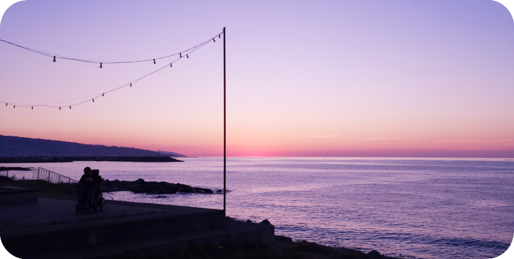

Who am I?
Name: Ilayda Tüysüz.
Age: 17 jaar.
Residence + living situation: Roosendaal, bij mijn ouders.
Previous studies + profile : HAVO, C&M.
Van jongs af aan heb ik veel tijd besteed aan gamen. Zowel op mijn iPad als op mijn Nintendo toestellen. Hierdoor kwamen mensen vaak naar mij toe als zij iets niet begrepen, terwijl ik zelf ook niet veel wist over het toestel. Toch leer je het na een tijdje door het op te zoeken en te herhalen, waardoor ik me steeds vaker af vroeg hoe alles in elkaar zat. Ook was ik vaak bezig met tekenen, dansen en zingen. Al deze dingen gelden nogsteeds. Ik ben blij dat ik hobby's heb waar ik het alleen kan doen, maar ik hou er ook van om uit te gaan met vrienden. Als je mijn vrienden vraagt over mijn eigenschappen, dan krijg je waarschijnlijk antwoorden als volgt:
- Gereserveerd
- Behulpzaam
- Tolerant
Ik denk dat het hierdoor makkelijk is om mij te benaderen. Een eerste indruk is belangrijk, maar het hoeft niet altijd juist te zijn. Toch zijn er wel dingen die ik absoluut niet wil zien in de mensen waar ik mee om ga, en dat is discriminatie in welke vorm dan ook. Ik vind het belangrijk dat iedereen zich welkom voelt bij mij. Dit houdt dus in dat ik niet met mensen om wil gaan die er voor kunnen zorgen dat andere mensen me niet willen, of durven, aan te spreken. Als we verwachten dat anderen ons met respect behandelen, dan moeten we dat zelf ook bij anderen doen. Buiten school hou ik me graag bezig met kunst. Vooral tekenen (zowel digitaal als traditioneel) en fotografie. Het onderwerp is meestal een landschap.
